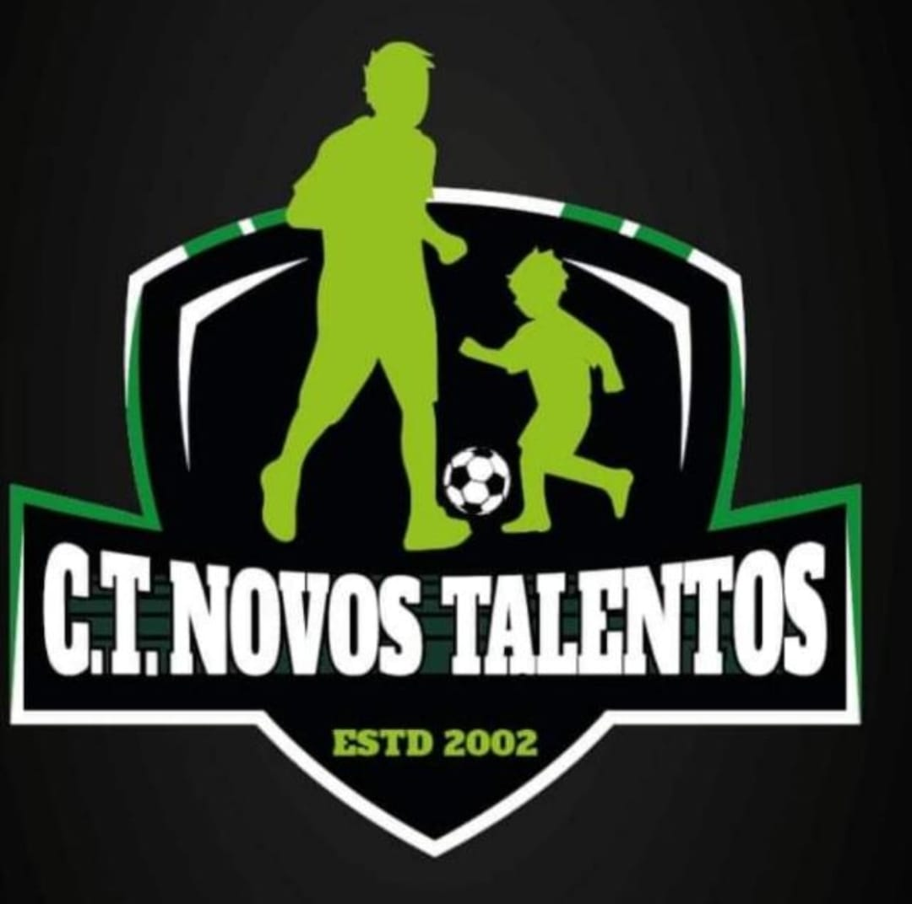

Sobre o CT Novos Talentos
Conheça um pouco mais sobre o nosso espaço.
Nossa História
O CT Novos Talentos é um espaço esportivo de Rio Claro que há mais de 30 anos trabalha com futebol, escolinha e formação de novos talentos. O projeto nasceu com a ideia de incentivar a molecada a praticar esporte, revelar jogadores e oferecer um ambiente positivo para tirar crianças e jovens da rua.
Além das quadras, o CT conta com um espaço completo para jogadores, famílias e visitantes, com TV para assistir jogos, churrasqueira, lanchonete, mesa de sinuca, pebolim e uma área ampla para carros e motos.
Nossa Estrutura
- 3 Quadras Society
- Bar
- Churrasco
- Vestiário
- Área ampla de estacionamento
- Mesas para assistir aos jogos
- Área de alimentação e lazer

Fotos do Espaço
Veja algumas fotos da estrutura do CT Novos Talentos.

Quadra durante o dia

Ambiente no fim da tarde

Jogos noturnos